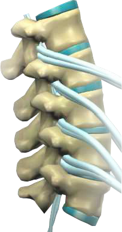

Degeneration
-

When your spine is continually neglected, you may enter various phases of degeneration. This progressively worsening condition is often the result of neglected spinal misalignment, injury, or misalignment. Because obvious symptoms are not always present, this condition can exist for years without detection.
-
Facet JointsVertebral BoneNervesBulging Disc
-
Degeneration of the spine can begin with an injury to the disc of the spine. Small Tears start forming in the Annulus or Disc Wall.
Site of TearingAnnulus FibrosusNucleus Pulposes -
Osteophytes or Bone Spurs start to form as the tear tries to heal. The continued cycle of tearing and scarring cause the disc wall to weaken over time.
Site of TearingAnnulus FibrosusNucleus Pulposes -
After some time, the disc becomes damaged and leaks material out of its Nucleus. This causes the disc to collapse.
-
Bone Spurs Continue to form, further limiting range of motion and nerve signal impulses to the rest of the body.
-
It should be noted every patient is different. Degeneration and healing speeds vary with every patient, however the more time a subluxation has been left untreated, the longer the road to recovery will be. The time to see your chiropractor is today!